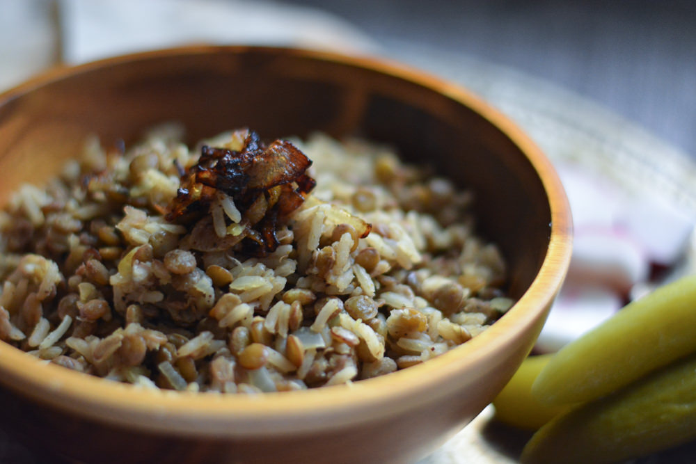

Lentils and Rice

Dinner in 30 minutes
Easy, flavourful, comforting,.. what more do you want in an easy dinner meal? This dish is so customizable- make it spicier with Sriracha, make it heartier with added potatoes, make it Mexican-inspired with chilli powder and paprika. Not to mention, it satisfies many diet restrictions: it's gluten free,dairy-free, and vegan, should you use vegetable broth instead of chicken.
- 3 1/2 cup vegetable or chicken broth
- 1/2 onion, diced
- 3 cloves garlic, minced
- 1 cup green lentils
- 1 cup rice
- 1 tsp salt
- 1 tsp cumin
- 1 tsp garam masala
- 1 tsp cinnamon
- 1 bayleaf
- Saute onions and garlic.
- Add broth and lentils, bring to a boil.
- Cover and simmer for 10 minutes.
- Add rice and spices to lentils. Stir.
- Cover and cook on low heat for 15 mintues, until rice is cooked.
- Serve with carmelized onions and spiced yogurt.